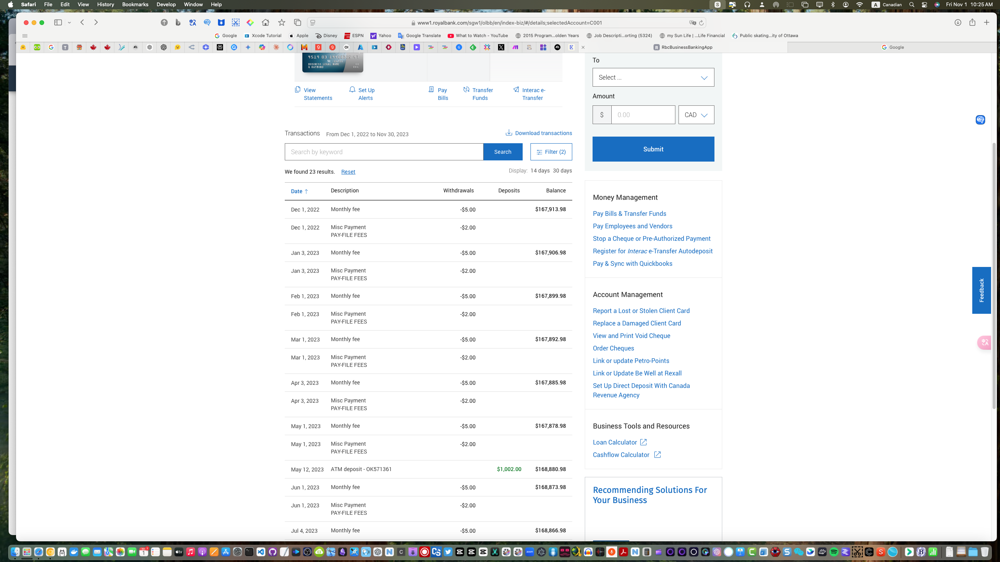

零基础教你用F5-TTS克隆任意声音！
🔥🔥🔥视频简介： 🚀【AI语音】零基础教你用F5-TTS克隆任意声音！本地部署+云端部署双方案，整合Colab免费算力，轻松实现数字人开发 🚀本期视频详细演示最新的开源文本转语音和声音克隆项目F5-TTS的功能和使用方法。 🚀演示了如何在本地环境和Google Colab上部署该项目，通过ngrok实现内网穿透，使项目可以在公网访问。 🚀视频详细讲解了F5-TTS的创新技术如flow matching和diffusion Transformer、sway sampling策略等，这些提升了其实时处理能力，适用于语音助手、交互式语音系统等场景。 🚀视频还展示了声音克隆的效果，包括情绪控制和多语种语音生成的应用。还对比了不同模型（F5-TTS和E2-TTS）的生成效果，并展示了中英文的声音克隆。
👉👉👉视频中所用到的代码 https://blog.stoeng.site/20241031.html 👉👉👉我的开源项目 https://github.com/win4r/AISuperDomain 👉👉👉请我喝咖啡 https://ko-fi.com/aila
🔥🔥🔥YouTube时间戳： 00:00:00 - 视频开场介绍 00:00:14 - 展示克隆声音效果 00:00:31 - 概述视频内容 00:01:09 - F5-TTS项目技术介绍 00:02:01 - 本地部署教程 00:03:01 - 使用演示 00:05:27 - Google Colab部署教程 00:07:15 - API接口使用教程 00:08:25 - 视频总结与结束语
#AI语音 #声音克隆 #tts #开源项目 #教程 #人工智能 #F5-TTS #ai #agi
